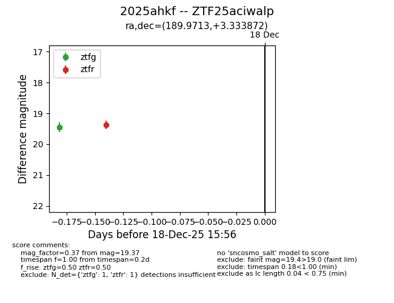
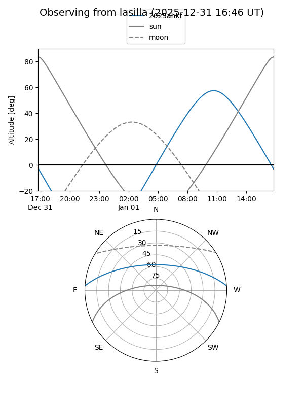
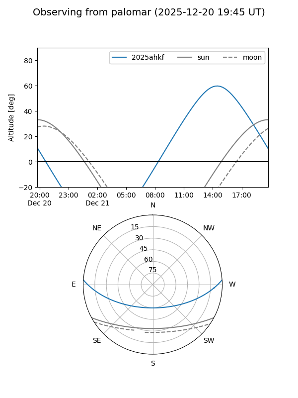
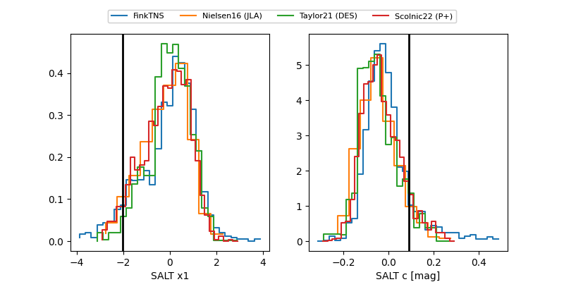

2025ahkf
Target 2025ahkf at 2025-12-21 14:22
Aliases and brokers:
FINK: fink-portal.org/ZTF25aciwalp
Lasair: lasair-ztf.lsst.ac.uk/objects/ZTF25aciwalp
ALeRCE: alerce.online/object/ZTF25aciwalp
TNS: wis-tns.org/object/2025ahkf
YSE: ziggy.ucolick.org/yse/transient_detail/2025ahkf
alt names
ZTF25aciwalp (ztf,fink_ztf)
2025ahkf (tns,yse)
Coordinates:
equatorial (ra, dec) = 189.9713,+3.33387
equatorial (HMS+DMS) = 12:39:53.11,+03:20:01.94
galactic (l, b) = (295.8150,+66.04585)
Flags:
Photometry:
last ztfg=19.60, ztfr=19.28
2 ztfg, 2 ztfr detections
Lightcurve

Visibility


Additional plots
